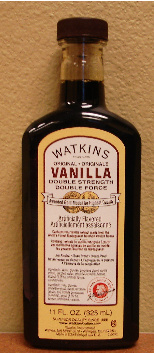

Mom shops at McGinnis Sisters
I have talked about my favorite grocery store, McGinnis Sisters before and why I like it so much – it is small, it is local, they patronize local farms for produce and chicken – but today I feel like devoting a whole post to them. Maybe it’s because I like the way they recently started to sell raw milk cheeses from several local Amish farms, in addition to expanding their already impressive selection of imported cheese to include a Greek cheese section. The raw milk cheeses come from mostly grass-fed cows and include a Pennsylvania feta. I bought some of that today and can’t wait to try it.
I also like the way they get their chicken from Amish farms; it’s hormone and antibiotic-free and delicious. They grind their own beef and their “regular” grind is just right for hamburgers on the grill; it’s 85% lean, but the same percentage at Whole Foods is much greasier, so I don’t know. The butchers at McGinnis Sisters make their own sausage, too, both Italian and “country”, and I like it a lot.
The Sisters sell milk in glass bottles from Brunton Dairy, another local farm, as well as Brunton Dairy’s ice cream. We especially love the vanilla. They have their own bakery and also sell bread from Pittsburgh’s Breadworks, including the hard to find whole wheat ciabatta, a favorite of ours. I bought some of that today.

But maybe the best thing about McGinnis Sisters is how responsive they are to customer requests for products. You have heard me praise Watkins vanilla more than once, but unfortunately the only way I could get my hands on it was to order it online or to go to Wal-Mart. The last time I was at McGinnis Sisters I happened to mention it to a stock boy and was shocked to get a phone call a week later from one of the sisters herself to tell me they were now carrying the vanilla in the store! I was able to buy a great big 11-ounce bottle and that made me very happy.
Comments
Sounds like an awesome place! I need to get me hands on some of that vanilla. Where were you getting it mail order?
I never got a chance to shop there; it always seemed so far and inconveniently located. But if you’d written this post a year ago, I think I’d have been persuaded it was worth a trip. Signed “Regretfully Yours, in New Haven.”
Hi, Mary – You can order it lots of places, but the easiest is probably Watkins Online. I like the original double strength baking vanilla, but they also sell a “pure” vanilla. I think there are laws about what you can call pure and what has to be labeled “artificial” with vanilla, and the fortifying process they do on their double -strength baking vanilla forces them to label it artificial. But I think it’s the best vanilla I’ve ever baked with; it tastes recognizably different.
zp – I’m sorry you left Pittsburgh without a good-bye lunch! Best wishes in Connecticut.
But as far as McGinnis Sisters goes, I’ve never found it took longer than 15 minutes to get there, no longer than it takes to get to the Strip, or even less, considering you don’t have to hunt for a parking space. I just wonder how long they’ll stay in business in this age of consolidation.
Which location do you go to? Route 51 or Monroeville? I guess I’m just wondering if either one is “better,” carries more, etc. Sounds great, though, and I plan to check it out soon! :)
Watkins Vanilla is the best I’ve ever tried. I’m pretty lucky though, because my house is in the shadow of the Watkins factory and the store is 30 seconds away. (Shameless brag) I would also recommend some of Watkins’ other cooking products, especially the flavored grapeseed oils. I add them to everything I cook when I need oil.
Hi, Ashley – I actually think the Route 51 store might carry a little more but I live in the East End so I go to Monroeville.
Mmm – I bet it smells good where you live, Annie! Do they have a factory store? There used to be a big Nabisco factory about a quarter mile away from our house and we could smell the graham crackers baking when the wind was right; beautiful old historic building, too. Unfortunately they closed a few years back.
Some days it smells like cinnamon, which is #2 of Watkins’ 3 most famous products. #3 is their black pepper which, while very good, is not something we smell in the air, thank goodness. They have a factory store/museum where you can buy all kinds of Watkins stuff and look at some of the original products that J.R. Watkins used to sell off his cart (which is also in the museum!) If you’re ever in the area, it’s definitely worth a visit.
I actually couldn’t figure out which one was closer to me, and I didn’t know how to choose between them, another (strange but true) hurdle to my shopping there . . .
Pittsburgh cooks, listen up! Don’t make the same mistakes I did! Rebecca solves all!
So have you tried that local milk yet, Rebecca?
Also, re Watkins: I’m pretty sure they sell their products mostly through individual dealers, sort of like Amway or Mary Kay. Not sure how you locate your closest dealer, though, unless, of course, you decided to take it up as a “business opportunity” yourself.
That store sounds great! So glad you found a place like that. I will bring some of our raw milk with us when we come out this weekend.
Thanks, zp! I’m sure you’ll find some great stores in Connecticut.
No, Janet, I haven’t tried the milk yet, but the checkout girl was telling me how good it is. She said the skim is really creamy and the chocolate is delicious. As far as Watkins goes, yes, you did have to go through a dealer in the past; that’s how I was originally introduced to their products, but like Avon and a lot of the others you can now buy the stuff directly from the company and in several stores.
Hi, Mom! How will you keep the milk cold all weekend when you’re on the road? I’m glad because I was wondering if I should buy some of the lactose-free milk for Dad.
I froze it. WE aren’t leaving until St. a.m. and it will still be partially frozen by the time we get there. It freezes very well, believe it or not!
I wish I had a store like that nearby. It sounds like a terrific place.
I just want to know when the one will open in the Cranberry/Mars area. It can’t be soon enough!
Gosh, Kathy, I don’t know; their ads just keep saying, “Opening soon”, but when it does open I’m sure it will be fabulous!
MCGINNIS SISTERS IS NOW OPEN IN MARS PA, well its actually right by the Seven fields Sign, but anyhow its there, they opened September 10. WONDERFUL STORE much bigger then then other stores, I think they carry more, its wonderful.
I guess that must be the “Adams Township” store they talk about on the website; I wondered where that was. That’s pretty far from me but maybe I’ll make a field trip one of these days. My local McGinnis is now stocking Wege sourdough hard pretzels and as far as I know they are the only place in the area where you can buy them. Also RyKrisp crackers seem to have disappeared but McGinnis Sisters still carries them. They are just the right size for a slice of cheese!
I enjoyed the website and article with all the nice comments. I love to cook with key ingredients that are mostly organic.
Thanks
I’m a big fan of McGinnis Sisters, too – I buy all my milk, poultry and meat there. They are very friendly and responsive, too. I mostly shop at the Brentwood store, and sometimes at the Monroeville store. McGinnis Sisters is the best!
Add a comment